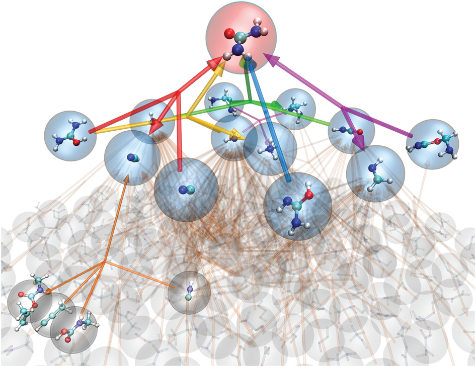
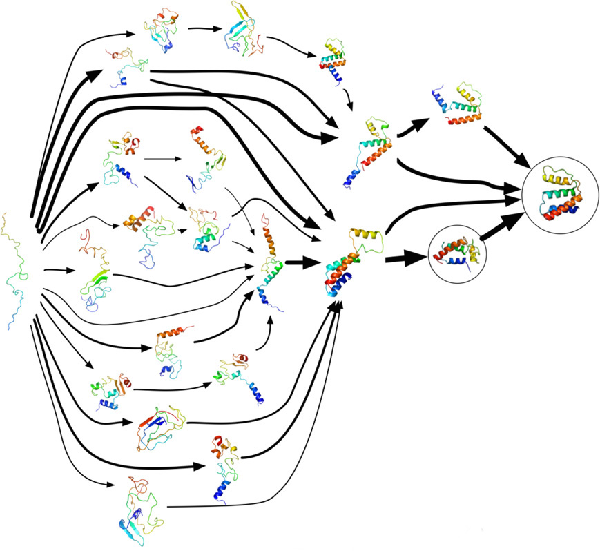
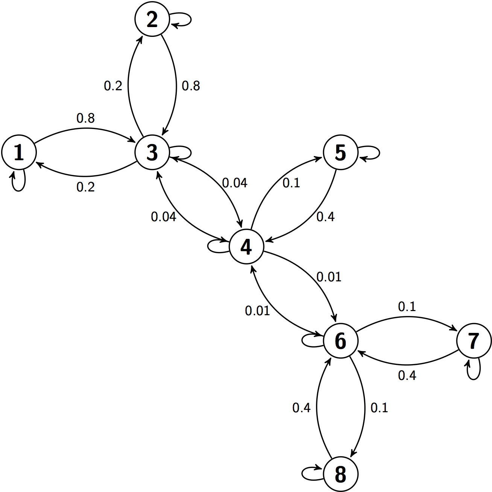
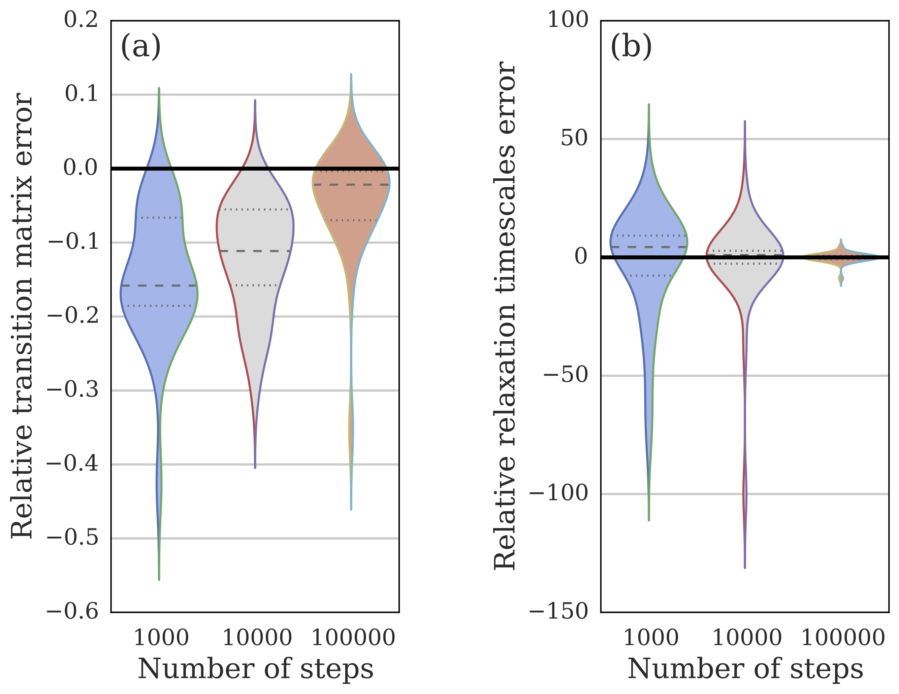
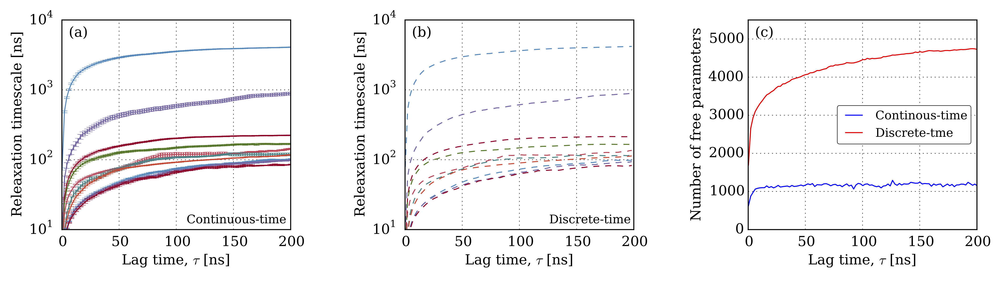

Fitting Master Equations
April 13, 2015
Robert T. McGibbon
arXiv:1407.8083
Overview
First Order Chemical Kinetics
Matrix Formulation

$$
\frac{d\vec{p}}{dt} = \underbracedbmatrix{p_U & p_I & p_F}{\vec{p}} \cdot
\underbracedbmatrix{
-k_{12} & k_{12} & 0 \\
k_{21} & -k_{21} - k_{23} & k_{23} \\
0 & k_{32} & -k_{32}
}{\mathbf{K}}
$$
Master equations

$$
\frac{dp_t}{dt} = p_t \, \mathbf{K}
$$
$$
p_{t+\tau} = p_t \, \underbrace{\exp(\tau\mathbf{K})}_{\mathbf{T}(\tau)}
$$
The embedding problem
Markov processes vs. Markov chains

- Every continuous-time Markov process can be "sliced" at any
$\tau>0$ to yield a discrete-time Markov chain. - Not every discrete-time Markov chain has an embedded continuous-time Markov process.
- Necessary and sufficient conditions for embedability are unknown.
The embedding problem

Fitting master equations
From discrete-time data
Existing algorithims
Estimating Markov processes from discrete-time data
- Route 1: first estimate discrete-time Markov chain, then ''solve'' embedding problem
$\{x_1, x_2, \ldots, x_n\} \rightarrow \mathbf{T}(\tau) \rightarrow \mathbf{K}$ - Fast, but unsatisfactory.1,2
- Route 2: directly fit a Markov process
$\{x_1, x_2, \ldots, x_n\} \rightarrow \mathbf{K}$ - Existing algorithims are slow
$(O(n^5), O(n^6))$ .3,4
New algorithm
Fast (enough). Confidence intervals. Sparsity.
Overview
Discrete-time data likelihood
Fun with matrix exponentials
$$\begin{align}
P(x | \mathbf{K}, x_0) &= \prod_{k=0}^{N-1} \mathbf{T}(\tau)_{x_{k\tau},\, x_{(k+1)\tau}} = \prod_{i,j} \mathbf{T}_{ij}(\tau)^{\mathbf{C}_{ij}(\tau)}
\end{align}$$
$$\begin{align} \underbrace{\mathcal{L}(\theta; \tau)}_{\color{data}\text{maximimze me!}} &\equiv \ln P(x | \mathbf{K}(\theta), x_0) \\ &= \sum_{i,j} \Big(\mathbf{C}(\tau) \circ \ln \exp\big(\tau\, \mathbf{K}(\theta)\big)\Big)_{ij} \end{align}$$
$$\begin{align} \underbrace{\mathcal{L}(\theta; \tau)}_{\color{data}\text{maximimze me!}} &\equiv \ln P(x | \mathbf{K}(\theta), x_0) \\ &= \sum_{i,j} \Big(\mathbf{C}(\tau) \circ \ln \exp\big(\tau\, \mathbf{K}(\theta)\big)\Big)_{ij} \end{align}$$
Practical optimization 101

- Parameterize away the constraints, if possible.
- Calculate the gradient, quickly.
- Use a quasi-Newton method and a good guess.
- Cross your fingers.
Rate matrix constraints
$$
\mathscr{K} = \left\{\mathbf{K} = \{k_{ij}\} \in \mathbb{R}^{n \times n} : k_{ij} \geq 0 \text{ for all } i \neq j, k_{ii} = -\sum_{j\neq i} k_{ij} \right\}
$$
- Off diagonal elements are non-negative (n.b.
$k_{ij}=0$ is okay). - Each row sums to zero.
- Must have a stationary distribution,
$\pi > 0$ , s.t.$\pi \mathbf{K} = 0$ . - Reversibility / detailed balance:
$\pi_i k_{ij} = \pi_j k_{ji} \hspace{1em} \forall\; i \neq j$ .
Parameterize away the constraints
Example: a 2 x 2 rate matrix
Parameterize away the constraints
- Detailed balance is essentially symmetry
-
$\sqrt{\frac{\pi_i}{\pi_j}} k_{ij} = \sqrt{\frac{\pi_j}{\pi_i}} k_{ji} = s_{ij} = s_{ji}$ - Only need to track "half" of the rate matrix
-
- Use log transform of the equilibrium distribution
Calculate the gradient quickly
Previous methods take
Computing error bars on the MLE

- Likelihood converges to a normal distribution.
- Asymptotic covariance
$=$ inverse Hessian at the MLE. - "Multivariate delta theorem"
How well does it work?
Example 1
Sparsity

A simple eight state Markov process. Connected states are labeled with the pairwise rate constants, $\mathbf{K}_{ij}$.

Convergence of the estimated rate matrix, $\mathbf{\hat{K}}$, to the true generating rate matrix for discrete-time trajectories of increasing length simulated from the process with a time step of 1.
Example 1
Sparsity

Comparison of the estimated and true off-diagonal rate matrix elements for a trajectory of length $N=10^{7}$ simulated from the process.
Example 2
Error bars

$$ z_{ij} = \frac{\hat{g}_i - \hat{g}_j}{\sqrt{\sigma^2_{\hat{g}_i} + \sigma^2_{\hat{g}_j}}} \overset{?}{\sim} \mathcal{N}(0, 1). $$

Example 3
Accuracy

Relative error between continuous-time and discrete-time Markov models for kinetics on random graphs. Values below zero indicate lower error for the continuous-time model, whereas values above zero indicate the reverse.
Example 4
Comparison with discrete-time models on WW Domain

Relaxation timescales are essentially identical ($r^2 = 0.999978$), but the continuous-time model has fewer nonzero parameters.
Example 4
Comparison with discrete-time models on WW Domain

The MLE rate matrix is sparse, which should make it easier to inteperpret.

We can monitor the convergence of individual elements of the rate matrix.
Conclusions
- Continuous-time models are more natural scientifically
- But a little trickier to estimate statistically.
- We've fixed that.
- The resulting models
- A little sparser & easier to interpret.
- Implemented in MSMBuilder
Thanks everyone!
Especially Muneeb, Matt, Christian, T.J., Vijay.
wwwmsmbuilder.org
githubmsmbuilder